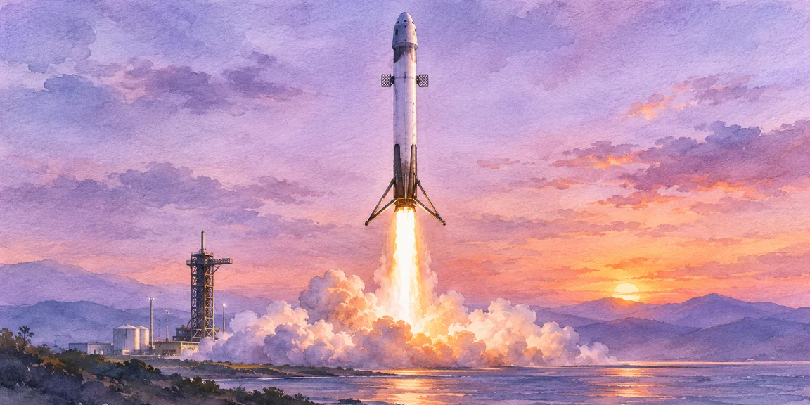

SpaceX Story
읽고 · 말하고 · 생각하는 영어

학습 안내
SpaceX Story
스페이스X 이야기
핵심 단어 · Key Vocabulary
affordable
가격이 감당 가능한
launch
발사(하다)
failure
실패
disappointed
실망한
unfortunately
불행하게도
reputation
평판
doubt
의심하다
investor
투자자
confidence
신뢰, 자신감
run out of
바닥나다
decision
결정
remaining funds
남은 자금
reach orbit
궤도에 진입하다
survive
살아남다
leading
선두의
persistence
끈기
courage
용기
회화 패턴 · Speaking Patterns
★ 오늘 꼭 외워서 토론 때 그대로 사용해보세요!
I think...
제 생각에는...
I believe...
저는 ~라고 믿습니다.
In my opinion,...
제 의견으로는...
From my point of view,...
제 관점에서는...
Personally,...
개인적으로는...
As for me,...
저는...
본문 읽기 · Reading
Three Rocket Failures Before Success
In the early days of SpaceX, Elon Musk had a big dream. He wanted to build rockets and make space travel more affordable. However, things did not go as planned. The company's first rocket launch ended in failure. Although many people were disappointed, Elon believed he could learn from the mistake and do better next time.
Unfortunately, the second launch also failed. Then the third launch failed as well. Each failure cost a lot of money and damaged the company's reputation. Many people began to doubt that SpaceX could succeed. Some investors lost confidence, and the company was running out of money. It seemed that SpaceX might soon disappear.
After the third failure, Elon Musk faced a difficult decision. He could give up, or he could try one more time. He chose to continue. Using the company's remaining funds, SpaceX built a fourth rocket. This time, the launch was successful. The rocket reached orbit, and the company survived. Today, SpaceX is one of the world's leading space companies. This story teaches us that persistence and courage can lead to success, even after repeated failures.
한국어 해석 · Translation
성공 전 세 번의 로켓 실패
SpaceX의 초창기에 일론 머스크는 큰 꿈을 가지고 있었습니다. 그는 로켓을 만들고 우주여행을 더 저렴하게 만들고 싶었습니
다. 그러나 일은 계획대로 진행되지 않았습니다. 회사의 첫 번째 로켓 발사는 실패로 끝났습니다. 많은 사람들이 실망했지만,
일론은 그 실수에서 배울 수 있으며 다음에는 더 잘할 수 있다고 믿었습니다.
안타깝게도 두 번째 발사도 실패했습니다. 그리고 세 번째 발사 역시 실패했습니다. 실패할 때마다 많은 돈이 들었고 회사의 평
판도 나빠졌습니다. 많은 사람들은 SpaceX가 성공할 수 있을지 의심하기 시작했습니다. 일부 투자자들은 신뢰를 잃었고, 회사
의 자금도 점점 바닥나고 있었습니다. SpaceX가 곧 사라질지도 모른다는 생각이 들 정도였습니다.
세 번째 실패 후, 일론 머스크는 어려운 결정을 내려야 했습니다. 그는 포기할 수도 있었고, 한 번 더 도전할 수도 있었습니다.
그는 계속하기로 선택했습니다. 회사에 남아 있던 자금을 사용해 SpaceX는 네 번째 로켓을 만들었습니다. 이번에는 발사가 성
공했습니다. 로켓은 궤도에 진입했고, 회사는 살아남았습니다. 오늘날 SpaceX는 세계를 선도하는 우주 기업 중 하나가 되었습
니다. 이 이야기는 반복된 실패 이후에도 끈기와 용기가 결국 성공으로 이어질 수 있다는 것을 보여줍니다.
토론 질문 · Discussion Questions
Why did Elon Musk continue after three failed launches?
왜 일론 머스크는 세 번의 발사 실패 후에도 계속 도전했을까요?
What can we learn from Elon Musk's decision?
일론 머스크의 결정으로부터 우리는 무엇을 배울 수 있을까요?
Have you ever achieved something after many failures?
여러 번의 실패 끝에 무언가를 이루어낸 경험이 있나요?
Is persistence always a good quality? Why or why not?
끈기는 항상 좋은 자질일까요? 왜 그렇거나 왜 그렇지 않다고 생각하나요?
예시 답변 · Sample Answers
I think Elon Musk continued because he strongly believed in his dream. He knew that failure was part of the learning process. He did not want to quit without giving his best effort.
저는 일론 머스크가 자신의 꿈을 강하게 믿었기 때문에 계속했다고 생각합니다. 그는 실패가 배움의 과정이라는 것을 알고 있었습니다. 최 선을 다하지 않고 포기하고 싶지 않았던 것입니다.
We can learn the importance of persistence. Even when things seem impossible, we should keep trying and learn from our failures.
우리는 끈기의 중요성을 배울 수 있습니다. 상황이 불가능해 보여도, 계속 도전하고 실패에서 배워야 합니다.
Yes, I have. When I was learning English, I made many mistakes and felt discouraged. But I kept studying, and now I can communicate more confidently.
네, 있습니다. 영어를 배울 때 실수를 많이 하고 좌절감을 느꼈습니다. 하지만 계속 공부했고, 지금은 더 자신 있게 소통할 수 있습니다.
Persistence is usually a good quality because it helps people overcome difficulties. However, sometimes people need to change their plans instead of continuing in the same way.
끈기는 대개 좋은 자질입니다. 어려움을 이겨내는 데 도움이 되기 때문입니다. 하지만 때로는 같은 방식을 고집하기보다 계획을 바꾸는 것 이 필요할 때도 있습니다.
오늘의 메시지 · Today’s Message
Reading의 마지막 문장을 바탕으로 정리한 메시지입니다.
After repeated failures, persistence and courage can lead to success.
실패가 반복되어도 끈기와 용기가 성공으로 이어질 수 있습니다.
영작 연습 · Write It Yourself
1. affordable
2. run out of
배경 지식
SpaceX는 일론 머스크가 2002년에 설립한 미국 우주 기업입니다. 초창기 로켓 발사에 세 번 연속 실패했지만, 네 번째에 성
공하며 살아남았습니다. 오늘날 재사용 로켓 기술로 세계 최고 수준의 민간 우주 기업이 되었습니다.